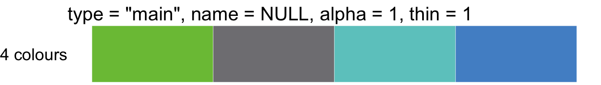

thlGraphs-vignette.RmdThere are five different types: main, quali, twoway, quanti and powerpoint.
Choosing colors by using thlColors function. Select number of colors, type and name of palette.
Example. Generate 3 colours from the quantitative color palette S2.
thlColors(n = 3, type = "quanti", name = "S2")
[1] "#2F62ADFF" "#BEC3BCFF" "#FCE4C3FF"Displaying colors by using thlColorsDisplay function. There you can also select number of colors, type and name of palette as in thlColors function.
Example. Display 3 colors from the quantitative color palette S2.
thlColorsDisplay(n = 3, type = "quanti", name = "S2")main - THL main colorsIn type main is four different number of colors: 1, 2, 4 and 8.
Example. Generate 2 colors from the main color.
thlColors(n = 8, type = "main")
[1] "#7BC143FF" "#807F83FF" "#6BC9C7FF" "#5191CDFF" "#B19ACAFF" "#FAA61AFF"
[7] "#ED1651FF" "#E20077FF"Example. Display 1 colors from the main color.
thlColorsDisplay(n = 1, type = "main")Example. Display 2 colors from the main color.
thlColorsDisplay(n = 2, type = "main")Example. Display 4 colors from the main color.
thlColorsDisplay(n = 4, type = "main")
Example. Display 8 colors from the main color.
thlColorsDisplay(n = 8, type = "main")quali - THL qualitative coloursTHL qualitative colors in the order in which they should be used in line plots. There is 10 different number of colors.
Example of maximum colors. Generate 6 colors from the qualitative color palette color line.
thlColors(n = 6, type = "quali", name="line")
[1] "#519B2FFF" "#2F62ADFF" "#BE3F72FF" "#29A0C1FF" "#FAA61AFF" "#CC77ACFF"Example of maximum colors. Display 6 colors from the qualitative color palette color line.
thlColorsDisplay(n = 6, type = "quali", name="line")Example of maximum colors. Generate 10 colours from the qualitative color palette color bar.
thlColors(n = 10, type = "quali", name="bar")
[1] "#2F62ADFF" "#BE3F72FF" "#519B2FFF" "#29A0C1FF" "#CC77ACFF"
[6] "#FAA61AFF" "#7BC143FF" "#606060FF" "#C3C2C6FF" "#DCDFE2FF"Example of maximum colors. Display 10 colors from the qualitative color palette color bar.
thlColorsDisplay(n = 10, type = "quali", name="bar")quanti - THL quantitative coloursIn type quanti you can choose six different names of palette: S1,S2,S3,... or S6. Also you can choose from 1 to 7 number of colors.
Example of maximum colors. Generate 7 colors from the quantitative color palette S1.
thlColors(n = 7, type = "quanti", name="S1")
[1] "#519B2FFF" "#87B65CFF" "#9FBF70FF" "#B6C985FF" "#CDD29AFF" "#E5DBAEFF"
[7] "#FCE4C3FF"Example of maximum colors. Display 1-7 colors from the quantitative color palette S1.
thlColorsDisplay(n = 1:7, type = "quanti", name="S1")Example of maximum colors. Generate 7 colors from the quantitative color palette S2.
thlColors(n = 7, type = "quanti", name="S2")
[1] "#2F62ADFF" "#337AACFF" "#6594B2FF" "#98AFB7FF" "#CAC9BDFF" "#E7D9C1FF"
[7] "#FCE4C3FF"Example of maximum colors. Display 1-7 colors from the quantitative color palette S2.
thlColorsDisplay(n = 1:7, type = "quanti", name="S2")Example of maximum colors. Generate 7 colors from the quantitative color palette S3.
thlColors(n = 7, type = "quanti", name="S3")
[1] "#BE3F72FF" "#CB6083FF" "#D78193FF" "#E4A2A2FF" "#F0C3B3FF" "#F6D3BBFF"
[7] "#FCE4C3FF"Example of maximum colors. Display 1-7 colors from the quantitative color palette S3.
thlColorsDisplay(n = 1:7, type = "quanti", name="S3")Example of maximum colors. Generate 7 colors from the quantitative color palette S4.
thlColors(n = 7, type = "quanti", name="S4")
[1] "#519B2FFF" "#67A84FFF" "#7CB56EFF" "#92C38EFF" "#A8D0AEFF" "#BDDDCDFF"
[7] "#D3EAEDFF"Example of maximum colors. Display 1-7 colors from the quantitative color palette S4.
thlColorsDisplay(n = 1:7, type = "quanti", name="S4")Example of maximum colors. Generate 7 colors from the quantitative color palette S5.
thlColors(n = 7, type = "quanti", name="S5")
[1] "#2F62ADFF" "#4A79B8FF" "#668FC2FF" "#81A6CDFF" "#9CBDD8FF" "#B8D3E2FF"
[7] "#D3EAEDFF"Example of maximum colors. Display 1-7 colors from the quantitative color palette S5.
thlColorsDisplay(n = 1:7, type = "quanti", name="S5")Example of maximum colors. Generate 7 colors from the quantitative color palette S6.
thlColors(n = 7, type = "quanti", name="S6")
[1] "#BE3F72FF" "#C25C87FF" "#C5789BFF" "#C994B0FF" "#CCB1C4FF" "#CFCDD8FF"
[7] "#D3EAEDFF"Example of maximum colors. Display 1-7 colors from the quantitative color palette S6.
thlColorsDisplay(n = 1:7, type = "quanti", name="S6")twoway - THL twoway quantitative colorsUsing twoway quantitative color palettes
THL twoway color palette K1 with 7 colors
Example of maximum colors. Generate 7 colors from the twoway quantitative color palette K1.
thlColors(n = 7, type = "twoway", name = "K1")
[1] "#2F62ADFF" "#4A8ABAFF" "#93B4CEFF" "#DCDFE2FF" "#D2AABDFF" "#C97498FF"
[7] "#BE3F72FF"Displaying all different twoway palettes
Example of maximum colors. Display 3, 5, 7 and 9 colors from the twoway quantitative color palette K1.
thlColorsDisplay(n = c(3,5,7,9), type = "twoway", name = "K1")Example of maximum colors. Display 3, 5, 7 and 9 colors from the twoway quantitative color palette K2.
thlColorsDisplay(n = c(3,5,7,9), type = "twoway", name = "K2")Example of maximum colors. Display 3, 5, 7 and 9 colors from the twoway quantitative color palette K3.
thlColorsDisplay(n = c(3,5,7,9), type = "twoway", name = "K3")Example of maximum colors. Display 3, 5, 7 and 9 colors from the twoway quantitative color palette K4.
thlColorsDisplay(n = c(3,5,7,9), type = "twoway", name = "K4")Example of maximum colors. Display 3, 5, 7 and 9 colors from the twoway quantitative color palette K5.
thlColorsDisplay(n = c(3,5,7), type = "twoway", name = "K5")Example of maximum colors. Display 3, 5, 7 and 9 colors from the twoway quantitative color palette `K6.
thlColorsDisplay(n = c(3,5,7), type = "twoway", name = "K6")powerpoint
Example of maximum colors. Generate 9 colors from the powerpoint color.
thlColors(n = 9, type = "powerpoint")
[1] "#7BC143FF" "#519B2FFF" "#F2F2F2FF" "#606060FF" "#0060A6FF" "#079E9EFF"
[7] "#6BC9C7FF" "#9171BCFF" "#BC4BA7FF"Example of maximum colors. Display 9 colors from the powerpoint color.
thlColorsDisplay(n = 9, type = "powerpoint") There are two different types: thlBarPlot, thlLinePlot.
Example of Bar plot. Barplot of monthly percentages (%) of patients treated over 180 days with caption year 2017. Data=“yli180”.
data("yli180")
yli180$pros <- as.numeric(as.character(yli180$pros))
mycaption <- c(expression(paste(bold("Lähde:"), " THL"))) ## A caption which is partially in bold
thlBarPlot(data = subset(yli180, grepl("2017", kk)), xvar = kk, yvar = pros, ylimits = c(0,2), ylabel = "%", title = "Erikoissairaanhoidosssa yli 180 vrk odottaneet", caption = mycaption)Cont…Example of Bar plot with horizontal mode.
data("yli180")
yli180$pros <- as.numeric(as.character(yli180$pros))
mycaption <- c(expression(paste(bold("Lähde:"), " THL"))) ## A caption which is partially in bold
thlBarPlot(data = subset(yli180, grepl("2017", kk)), xvar = kk, yvar = pros, ylimits = c(0,2), ylabel = "%", title = "Erikoissairaanhoidosssa yli 180 vrk odottaneet", caption = mycaption, horizontal = TRUE)Examples of Line plots. Data=“yli180”. Thl logo is included in the plot.
Default ilne plot. Data=yli90. ‘## Default line plot: #’ thlLinePlot(data = subset(dat, year<2007), xvar = year, yvar = value, #’ groupvar = group, ylimits = c(0,350000)) , xaxis.breaks=c(“Itä-Suomi”, “Lappi”)
data("yli180")
yli180$kk2<-factor(yli180$kk, levels = yli180$kk)
thlLinePlot(data = yli180, xvar = kk2, yvar = pros, ylimits = c(0,2), ylab = "%",
title = "Erikoissairaanhoidosssa yli 180 vuorokautta hoitoa \nodottaneet kolmannesvuosittain 2015 - 2018",
caption="", xaxis.breaks = c("12/2015","12/2016","12/2017","12/2018"))
thlPlotLogo(label =NULL, x = .67, y = .04, size = 1, fontsize = 10)